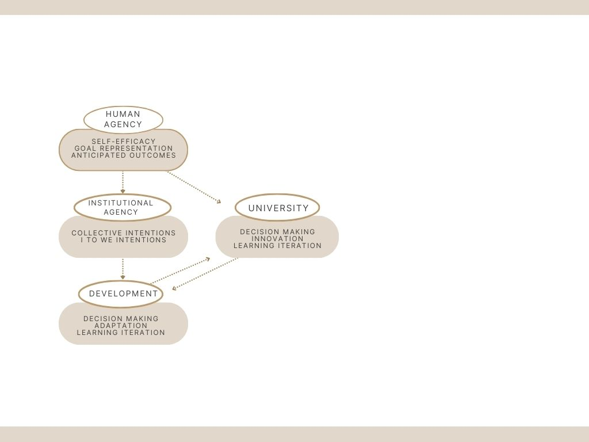

Abstract.
This article examines agency as an articulating category that connects human action, institutional action, and development processes. Drawing from Bandura's (1989) socio-cognitive theory, the paper analyzes self-efficacy, goal representation, and outcome anticipation. These elements are integrated with organizational perspectives that conceptualize agency as a relational process situated between structure and action (Smart, 1982; Giovine & Barri, 2023; Garikipati & Olsen, 2008). On a second level, the study reviews institutional agency as a form of joint action grounded in shared intentions, as proposed by Ludwig (2017), and relates it to recent studies on university governance (Acosta-Silva, 2022; Brunner, 2011). Finally, this framework is articulated with contributions of development, particularly those of Pérez (2012) and Mazzucato (2013). Consequently, a conceptual model is proposed that explains how the public university can function as an agent of development by integrating individual capabilities to confront social, technological, and organizational challenges.
Keywords:
agency; development; organization; university governance; Bandura.
Resumen.
Este artículo examina la agencia como categoría articuladora que conecta la acción humana, la institucional y los procesos de desarrollo. Desde la teoría sociocognitiva de Bandura (1989), el estudio analiza la autoeficacia, la representación de metas y la anticipación de resultados. Estos se integran con perspectivas organizativas que conceptualizan la agencia como un proceso relacional situado entre la estructura y la acción (Smart, 1982; Giovine y Barri, 2023; Garikipati y Olsen, 2008). En un segundo nivel, se revisa la agencia institucional como una forma de acción conjunta basada en intenciones compartidas, según Ludwig (2017), y se relaciona con estudios sobre gobernanza universitaria (Acosta-Silva, 2022; Brunner, 2011). Por último, este marco se articula con aportes de la economía del desarrollo, en particular los de Pérez (2012) y Mazzucato (2013). En consecuencia, se propone un modelo conceptual que explica cómo la universidad pública puede actuar como agente de desarrollo al integrar capacidades individuales para enfrentar desafíos sociales, tecnológicos y organizativos.
Palabras clave:
agencia, desarrollo, organización, gobernanza universitaria; Bandura.
Introduction
Understood beyond its economic dimension, human development is an agentic process, that is, a construct that emerges from the individual's interaction with their environment (Sugarman and Sokol, 2010, p. 5). Development fundamentally implies the capacity of both individuals and institutions to orient deliberate actions that shape collective well-being (Pérez 2012). In this line of reasoning, the notion of agency plays a central role because it enables an understanding of how actors construct their realities and participate in the creation of new phenomena (Latour, 2014, p. 2).
This perspective can be extended to the organizational realm, particularly to the economic, political, and technological processes that frame social life, where what Bandura (1989, 1175) terms "interactive emergent agency," the foundation of social cognition, operates. In this study, the terms institutional and organizational will be used to refer to the roles, values, processes, and actions of institutions and organizations (Portes, 2006, pp. 24-25). Or, as North (1993) differentiates, institutions are the formal rules, and organizations are the players, but most times one affects the other to a great extent (pp. 5-6).
Seminal research, such as that by Bandura (1989), underscored the human dimension of agency in three dimensions: self-efficacy, goal representations, and anticipated outcomes. That has, in turn, applied to organizations, emphasizing their capacity for learning, adaptation, and self-transformation. Building upon this, Giovine and Barri (2023) highlight that, drawing from Giddens and Bourdieu, agency can be understood as a relational space situated between structural determination and individual freedom (pp. 5–6). For example, Castañeda and Ríos (2007) reported a link between Bandura´s approach and organizational learning. The authors discuss the capacity of organizations to iterate within individual knowledge but note that the dimension of complexity must be considered (pp. 367-368).
Furthermore, within the political economy of development, and adopting this agentic focus, the literature recognizes the role of organizations as active agents in constructing transformation trajectories. Carlota Pérez (2012, p. 13) offers a historical reading of innovation through "the various agents," and in a complementary manner, Mazzucato (2013) asserts that innovation is strengthened through the university–business relationship (pp. 69–79). From this standpoint, universities are conceived as strategic actors capable of coordinating resources, generating knowledge, and promoting development scenarios.
In line with these ideas and consistent with the Bandurian framework, it is pertinent to recall Sábato and Botana's (1993) proposal. In their "Triangle of Relations," the authors maintain that innovation stems from the dynamic interaction among the State, the enterprise, and the university. Critically, the university can act as a transformative agent only when it has sufficient organizational agency to intervene in technological and productive decisions. Thus, development can be understood as an expansion of capabilities that extends beyond the individual and is projected onto broader organizations.
In this study, we seek to extend the concept of agency, originally rooted in classical sociology, by addressing gaps in the analysis of the conditions that expand or restrict the capacity of university actors to participate in strategic decisions on development issues. The central question guiding this work is: How can human agency, from Bandura’s socio-cognitive perspective, illuminate the relationship between development, innovation, and the action of public universities? The purpose is to demonstrate that human agency, in Bandurian terms, offers a solid foundation for examining the margins of action in the public university.
The paper is organized into four sections. The first section presents Bandura's conceptual framework of human agency and its relevance for understanding action in organizational contexts. The second analyzes the literature on university governance and its relationship with organizational agency. The third articulates these elements, drawing on key contributions from the political economy of development, particularly those of Pérez, Mazzucato, and Sábato and Botana. Finally, the discussion section offers a critical reading of the scope and limits of agency in public universities, proposing reflections for future research.
Methodology
Methodologically, this article adopts a theoretical-conceptual approach, based on an analytical, non-systematic review of the relevant literature, to construct an articulating conceptual model that integrates organizational and developmental approaches. According to Snyder (2019, p. 335), the integrative nature of the study is most often used in this kind of organizational study. The process involved answering each question in the author's review to develop a theoretical framework (p. 336).
In general, the study follows the recommendations of Summers (2001, pp. 406-407). Measures were taken to evaluate the theory critically rather than be led by it. The author drew on prior literature to reimagine the approach and used the bibliography to cross-reference. Also, the conceptual contribution aimed at “development of additional theoretical linkages” (pp. 408). The ideas were kept clear and direct, feedback was solicited from a colleague, and the text was revised and edited on two separate occasions (pp. 412).
The process followed a rigorous search-and-selection protocol. In line with Snyder’s advice, we developed search terms around “agency,” “agency and development,” and “university governance,” then screened databases (Wiley, JSTOR, Elsevier, Scopus, Google Scholar) for peer-reviewed articles. The inclusion criteria were documented: most cited texts; language (Spanish and English); the year, if it was a current application of the theory; and relevance to conceptual agency. The exclusion criteria, non-peer-reviewed sources, and the non-Latin American contexts when focusing on regional specifics. To test the protocol, piloted searches were conducted, and refined terms were used to ensure a manageable yet comprehensive set of works.
For the conceptual model, elements such as definitions of agency (micro, meso, macro), descriptions of governance structures, and discussions of development outcomes were extracted. These data were coded according to the three proposed levels: individual (Bandura’s self-efficacy and forethought), institutional (Ludwig’s we‑intentions and collective action), and systemic (Pérez’s cycles of technological change and Mazzucato’s state role). This rigorous synthesis shows how agency mechanisms scale from personal capacity to organizational processes and broader developmental impacts.
Theoretical Framework
Agency from its Sociological Foundations
The concept of agency has been historically developed in the social sciences to address the fundamental tension between structure and action. Smart (1982), in his analysis of Foucauldian sociology, maintains that the central question is to understand "how and to what extent actors can intervene in the course of their own existence" (p. 122). This concern reveals that agency cannot be reduced to an absolute faculty; by situating human action against organizational determinations, agency is understood as an exercise of reflexivity, interpretation, and responsibility on the part of the actors (Emirbayer, 1998, p. 1008).
According to Emirbayer (1998), human agency has a contradictory yet deliberative nature (p. 1013). In line with this idea, Giovine and Barri (2023) revisit the contributions of Giddens and Bourdieu to show that agency involves both the practical freedom of the actor and their inscription within social dispositions and rules. These authors emphasize that agency operates in an intermediate relational space between self-determination and conditioning, necessitating recognition of variable degrees of autonomy based on history, position, and available resources (Giovine and Barri 2023, pp. 2–6).
From this perspective, acting is not about constant decision-making or “iteration” as Emirbayer (1998) names it, but about deploying capabilities within a social field that simultaneously enables and restricts possibilities. Further elaborating on this notion, Garikipati and Olsen (2008) define agency as "the capability of any social actor to act." This capacity is shaped by both the agent's internal composition and its external relationships (p. 329).
This definition highlights that agency does not belong exclusively to the individual domain but can also be understood as a collective property emerging from interactions with other actors and with organizational structures. By integrating internal and contextual dimensions, the authors demonstrate that agency is a relational process constructed in dialogue with the environment. This contribution is fundamental for the present work, as it establishes a conceptual bridge between individual, collective, and organizational agency.
Human Agency in Social Cognitive Theory
Albert Bandura provides the conceptual foundation for understanding agency as the human capacity to influence the course of events intentionally. In his seminal article, "Human Agency in Social Cognitive Theory," Bandura (1989) posits that agency is not a passive attribute but a generative system through which people produce actions, anticipate outcomes, and reflect on their effects. This system operates via processes of self-regulation, self-reference, and self-organization (Bandura, 1989, p. 1175). Bandura identifies three central mechanisms for the exercise of agency:
Self-Efficacy
Self-efficacy is understood as the belief in one's own capacity to organize and execute courses of action required to attain designated goals. According to Bandura (1989), these beliefs influence cognitive processes by enabling anticipatory simulations and evaluations of consequences, thereby strengthening planning and decision-making (pp. 1179–1180). Self-efficacy also dictates the levels of effort, persistence, and resilience in the face of difficulties, making it a core element of intentional behavior.
Forethought (Goal Representation)
This is a mechanism by which individuals direct their action toward desired future states. Bandura (1989) argues that this process enables proactive control by establishing challenging goals, anticipating outcomes, and regulating behavior based on feedback (p. 1181). Forethought acts as a temporal bridge between the present situation and the projected objectives, articulating expectations, motivations, and strategies. From this perspective, human action is guided not only by immediate conditions but also by symbolically internalized visions of the future.
Anticipated Outcomes
This process involves foreseeing the consequences of one's own actions and acting in accordance with valued expectations. Bandura (1989) points out that people seek outcomes aligned with their goals and avoid those they consider undesirable, thereby regulating both motivation and behavior (p. 1182). Self-efficacy modulates these anticipations by either strengthening or inhibiting confidence in embarking on specific courses of action. This process generates a cycle among expectations, decisions, and evaluations that sustains the intentionality of human behavior.
From Individual Agency to Development
The transition from individual to collective agency constitutes a key point for understanding how human action scales up to organizational forms. Following Bandura's foundational work, agency cannot be understood merely as an internal capacity but as a process unfolding in interaction with other actors and social structures. In this sense, the capacities for anticipation, goal representation, and outcome evaluation do not remain isolated on the individual level but form the basis for joint action.
In the sociological tradition reviewed previously, authors such as Smart (1982), Giovine and Barri (2023), and Garikipati and Olsen (2008) agree that agency operates within a relational field where individual actions intertwine with dispositions, rules, and resources. Giovine and Barri (2023) highlight that agency is never absolute but is exercised within structural conditions that both enable and constrain possibilities (pp. 2–6). Complementing this view, Garikipati and Olsen (2008) define agency as the capacity of any social actor to act based on their internal history and external relationships (p. 329).
Bridging this gap, Ludwig (2017) argues that agency does not imply the existence of an isolated collective agent. In his work, “From Plural to Institutional Agency”, the author argues that organizations act when their members undertake joint actions based on shared intentions, moving from i-intentions to we-intentions (Ludwig 2017, p. viii). This kind of agency, therefore, depends on actors' commitment to the norms and functions that structure collective decisions, and, importantly, organizational actions tend to be resilient to change and operate over longer time intervals than those of a single individual (p. 5).
Emirbayer (1998) also refers to a different rationality, the institutional agency relies more on “informal patterns of shared beliefs” rather than “cost-benefit” (p. 983). This definition is fundamental for organizational analysis, as it disaggregates agency, granting it a little more freedom than Giddens and Bourdieu´s frameworks. In line with Bandura, the author sets into an interconnected moment, which is the projective aspect of agency: The capacity to “hypothesize”, that is, to imagine, plan, and create alternative futures (p. 984).
This is the source of a change from “I” to variable “me´s” that might translate into a collective coordination (p. 988). This is relevant to action in empirical research; one area is the institutional context: is agency limited or reinforced by actors' responsiveness? (p. 1006). Furthermore, the question arises of how this agency translates into development.
University Institutional Agency
Recent literature concurs that public universities operate within complex institutional frameworks. Acosta-Silva (2022) maintains that universities function within a "system of interdependent arrangements," where autonomy, funding, state regulations, and external pressures determine the adequate margin of institutional decision. From this perspective, institutional agency does not reside solely in formal governing bodies but also in the institution's capacity to coordinate actors, interpret norms, and orient its collective action in changing contexts. Authors such as Brunner (2011) argue that university governance is a field in which ideas, interests, and normative arrangements interact, shaping the interpretation of problems and strategic decision-making. In this sense, institutional agency depends on the university's ability to generate shared visions, articulate internal demands, and respond to external dynamics without losing sight of its mission.
Furthermore, other studies underscore that institutional agency in universities also emerges from their capacity to articulate multiple internal and external actors. Peralta-Vallejo (2022) shows that governance models depend on interactions among authorities, collegiate bodies, academics, students, and external stakeholders, and that these interactions underpin the institution's strategic action.
Likewise, Cornejo (2022) highlights that university governance in public institutions is characterized by high levels of complexity and the need to coordinate participatory structures, consultation mechanisms, and shared responsibilities. These elements allow for linking institutional agency with coordination processes that are often distributed among different units and actors rather than being centralized.
Innovation, Development, and University
Nobel laureate, Douglas North (1993), referred to institutions and organizations as means to development (p. 5). Portes (2006) provides an interesting framework that delves into sociology to the development context. This provides concepts of development that eschew mere economic approaches or, as this author claims, an “institutional turn” (p. 16), and invite a “deliberative development” (p. 28). Similarly, Sen (1999) argues that the economy of development offers perspectives on how agency operates at organizational and institutional scales, with values of inclusion and dialogue (p. 9) in the first, and “instrumental freedom” (p. 10) in the second.
As a regional reference, three authors in Latin America have offered their insights into development. Carlota Pérez (2012) posits that development should engage a dual model that includes competitiveness and wealth as measures of the well-being of all parties, which brings us back to the capacity of “adaptability” (pp. 30-32). Along similar lines, Mariana Mazzucato (2013) argues that development is driven by innovation and radical technological evolution. Sábato and Botana (1993) have also mentioned some ideas parallel to the study´s approach, including the university as a hub for science-technological growth (p. 10).
For example, Perez (2012) argues that learning is a developmental strategy. As development was once viewed as the accumulation of natural resources (p. 42), she suggests that now it is only achieved through human action (p. 46), which involves deliberation among “society”, that is, government, enterprises, and universities (p. 47). This is critical for the articulation to agency, as, according to Perez (2012), the difference between small and big countries lies in the capacity to implement changes through attitudes, behavior, and competencies, along with institutional agency, to reach government commitment (p. 48).
Furthermore, and in line with the role of universities, even though rather superficial, we anchor Mazzucato's (2013) assessment of the relation between innovation and the university and the State (p. 79). One example is the University of Kentucky, a public institution where the first tactile screens were developed (p. 117). Her proposal argues that public institutions can assume risks, make strategic investments, and direct innovation processes through anticipatory decisions, but that they are subject to state regulations that might incentivize or discourage (p. 135). Based on historical studies, the author demonstrates that technological developments were driven by state entities that acted as agents, creating markets and defining research strategies.
Although more dated than the previous authors, we left the classic proposal by Jorge Sábato and Natalio Botana (1993) to close this section and tie together the preceding ideas. They had already predicted the scientific-technological development as imperative for our region. However, capacity was the primary concern, along with participation.
The authors conceptualize innovation as the outcome of dynamic interaction and adaptation to the current productive structure, based on knowledge. Their "Triangle of Relations" emphasizes that research (the university) plays a transformative role by acting in conjunction with the other two vertices (p. 6). However, the most critical interrelationship in this analysis is the scientific-technological with the State (p. 10). This formulation views innovation as a process sustained by cooperation, information exchange, and a shared definition of technological priorities.
Discussion
Collectively, the contributions from the preceding sections may show that the actions of a public institution emerge from the confluence of individual decisions, organizational structures, and normative frameworks. As illustrated in the diagram below, integrating these levels enable the construction of a conceptual model that explains how a public university can act as an agent of development. Although it provides an exploratory view, it may shed light on the importance of public universities in Latin America.
The integration of Bandura's socio-cognitive mechanisms into the discussion of organizational action represents a critical theoretical leap. Therefore, the public university’s institutional agency is not merely a product of its formal legal status, but rather the aggregation and coordination of these fundamental psychological capacities among its key actors (academics, administrators, and leadership).
Figure 1 - Theoretical diagram

Source: author
Ludwig’s (2017) philosophical contribution is central to bridging the individual (Bandura) and the organizational (Governance). Institutional agency, defined by the shift from I-intentions to we-intentions, requires a shared understanding of roles and rules. This perspective allows the framework to address the complexity of university governance (Acosta-Silva, 2022; Cornejo, 2022), where action capacity is often distributed and contested.
The final step in this synthesis connects the internal mechanisms of agency with the university's external, transformative role in development. The works of Sábato and Botana (1993), Pérez (2012), and Mazzucato (2013) situate the institution as a strategic agent capable of affecting historical and technological trajectories.
This articulation demonstrates that the university acts as a development agent when:
It possesses strong institutional efficacy: It is confident and capable of assuming the risks required for technological and social innovation.
It integrates strategic forethought: Its shared goals align not just with academic interests, but with the broader national or regional development priorities (Pérez, 2012).
It actively engages in the "Triangle of Relations" (Sábato & Botana, 1993): Its capacity to act is realized through the intentional coordination of knowledge, resources, and policy direction with the State and the productive sector.
The conceptual model offers a powerful lens to examine the quality of agency in public universities. It suggests that merely reforming governance structures (rules) is insufficient; genuine transformative capacity requires cultivating and channeling human agency (efficacy and shared intentionality) into sustained institutional agency (coordinated action) aimed at deliberate development objectives.
Conclusion
Throughout this analysis, the notion of agency has emerged as the central thread for rethinking the relationships among action, structure, and social transformation. As Sugarman and Sokol (2010) say, “an externalism that attends to the developmental context and how activity and interactivity in the world both nurture and constrain agentive development. (p. 5). The analysis demonstrates that the three mechanisms of human agency formulated by Bandura (1989) constitute a good foundation for understanding how university actors organize and orient their actions within complex institutional structures.
Critically, the conceptual framework bridges this individual level to the collective through Ludwig's (2017) perspective on institutional agency. In this context, the Bandurian mechanisms are projected beyond the psychological plane: self-efficacy acquires an institutional correlate (institutional confidence), individual goals are integrated into collective visions, and personal anticipations become shared strategic evaluations. The perspectives from the political economy of development (Pérez, 2012; Mazzucato, 2013) situate this articulation in dynamics of innovation and development, confirming that institutional agency can play a transformative role in broader historical processes. As Emirbayer (1998) put it, there could be a future investigation of: “Actors who are positioned at the intersection of multiple temporal-relational contexts can develop greater capacities for creative and critical intervention.” (p. 1007).
The present research identifies a few limitations that are inherent to exploratory research. In this sense, theory might be studied by considering other authors who have examined agency from an organizational perspective, for example. Another aspect to consider for the academic community is that empirical data might also offer a broader scope and a multidisciplinary dimension. In this sense, the selection of articles and prior literature could be strengthened and broader. This insight regarding limitations is provided to the reader as an opportunity for further research.
This framework opens several avenues: First, empirical measurement, developing indicators to measure institutional self-efficacy (collective confidence) and the degree of coherence in strategic forethought across different university faculties or governing bodies. Second, doing comparative governance by analyzing how different and new university governance models (Brunner, 2011) facilitate or restrict the shift from individual i-intentions to collective we-intentions. Third, in the context of technological trajectories, research may include studying how the mechanisms of agency affect the choice and success of specific technological trajectories and innovation partnerships (Sábato & Botana, 1993) adopted by public universities in the Global South.
References
Acosta-Silva, A., Francisco Ganga-Contreras y Claudio Rama-Vitale (2021), “Gobernanza universitaria: enfoques y alcances conceptuales”, Revista Iberoamericana de Educación Superior (RIIES), vol. XII, núm. 33, pp. 3-17, doi: https://doi.org/10.22201/ iisue.20072872e.2021.33.854
Bandura, A. (1989). Human agency in social cognitive theory. American Psychologist, 44(9), 1175–1184. https://doi.org/10.1037/0003-066X.44.9.1175
Brunner, J. J. (2011). Gobernanza universitaria: tipología, dinámicas y tendencias. Revista de Educación, (355), 137–159.
Castañeda, D. I., & Rios, M. F. (2007). From individual learning to organizational learning. Electronic Journal of Knowledge Management, 5(4), 363–372. Disponible en http://www.ejkm.com
Cornejo, R. (2022). Aspectos distintivos de la gobernanza de la educación superior. En C. P. Góis (Ed.), Gobernanza universitaria en América Latina (pp. 45–67). Bogotá: Editorial Aula de Humanidades.
Emirbayer, M., & Mische, A. (1998). What is agency? American Journal of Sociology, 103(4), 962–1023. https://doi.org/10.1086/231294
Garikipati, Supriya, and Wendy Olsen. 2008. “The Role of Agency in Development Planning and the Development Process: Introduction to the Special Issue on Agency and Development.” International Development Planning Review 30 (4): i–ix. https://doi.org/10.3828/idpr.30.4.1
Giovine, M. A., & Barri, J. (2023). La agencia en la sociología de Pierre Bourdieu y Anthony Giddens. Estudios Sociológicos, 41(122). El Colegio de México. https://doi.org/10.24201/es.2023v41n122.2193
Latour, B. (2014). Agency at the time of the Anthropocene. New Literary History, 45(1), 1–18. https://doi.org/10.1353/nlh.2014.0003
Ludwig, K. (2017). From plural to institutional agency: Collective action II. Oxford: Oxford University Press.
Mazzucato, M. (2013). El Estado empresarial: Desmintiendo el mito del sector público vs. privado (E. Serapicos, Trad.). Buenos Aires: Portfolio Penguin.
North, D. C. (1993). The new institutional economics and development. Economic History Working Paper 9309002. Munich: University Library of Munich.
Peralta-Vallejo, Ximena Katherine. 2022. “La gobernanza en las universidades públicas en la zona 6 del Ecuador: Incidencia de los stakeholders en los niveles de gestión universitaria.” Escritos Contables y de Administración 13, no. 2: 104–42. https://doi.org/10.52292/j.eca.2022.3702
Pérez, C. (2012). Una visión para América Latina: Dinamismo tecnológico e inclusión social mediante una estrategia basada en los recursos naturales. Revista Econômica, 14(2), 11–54.
Portes, A. (2006). Instituciones y desarrollo: una revisión conceptual. Cuadernos de Economía, 25(45), 13–52.
Sábato, J. & Botana, N. R. (1993). La ciencia y la tecnología en el desarrollo futuro de América Latina. Arbor. Ciencia, Pensamiento y Cultura, 575, 21–44.
Sen, A. (1999). Development as freedom. Oxford: Oxford University Press.
Smart, B. (1982). Foucault, sociology, and the problem of human agency. Theory and Society, 11(2), 121–141. https://doi.org/10.1007/BF00160729
Snyder, H. (2019). Literature review as a research methodology: An overview and guidelines. Journal of Business Research, 104, 333–339. https://doi.org/10.1016/j.jbusres.2019.07.039
Sugarman, J., & Sokol, B. W. (2012). Human agency and development: An introduction and theoretical sketch. New Ideas in Psychology, 30(1), 1–14. https://doi.org/10.1016/j.newideapsych.2010.03.001
Summers, J. O. (2001). Guidelines for conducting research and publishing in marketing: From conceptualization through the review process. Journal of the Academy of Marketing Science, 29(4), 405–415.
Licencia: Esta obra está protegida bajo una Licencia Creative Commons Atribución-CompartirIgual 4.0 Internacional.